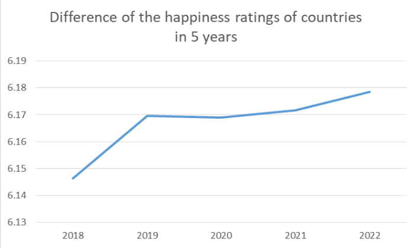
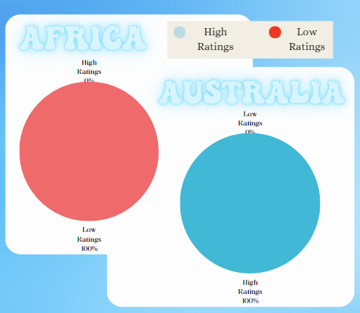

In summary: The line graph indicates that, within
the 2018-2022 timeframe, 2022 emerges as the year
when most people worldwide experienced the
highest levels of happiness.
By referring to these charts, we can make the inference
that every country in Australia displays high happiness
ratings, while, in the context of our sample data, the
included African countries consistently exhibit low
happiness ratings.